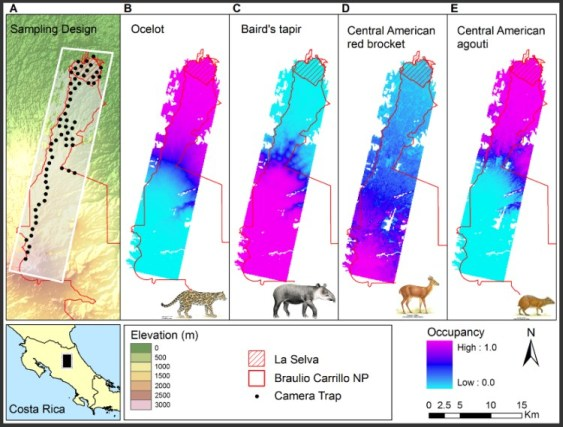
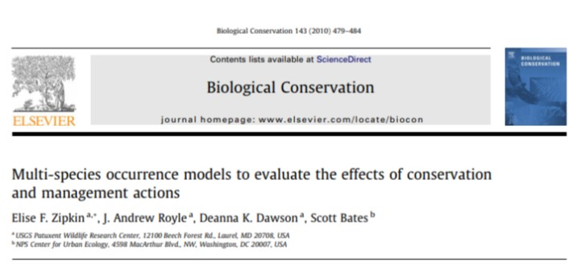

Otros modelos jerárquicos
Densidad, Diversidad, comunidades
Diego J. Lizcano, Ph.D.
ICN - UNal, Bogotá
Otros Tipos de modelos:
- Single-season site occupancy model (MacKenzie et al., 2002).
- Comunity occupancy model (Kéry and Royle, 2007).
- Royle-Nichols model (Royle and Nichols, 2003) -> abundancia en conteos puntuales. occuRN
- Binomial N-mixture models (Royle, 2004) -> Conteos de individuos en localidades. Poblacin cerrada. pcount
- Multinomial N-mixture models (Royle, 2004a) -> Conteos de individuos en localidades. Muestreo con remoción o doble observador. multinomPois
- Distance sampling models (Royle et al., 2004) -> Densidad en transectos de distancia con intervalo discreto. distsamp,
- “Open population” versions of the above: (MacKenzie et al., 2003; Chandler et al., 2011; Dail and Madsen, 2011) ->pcountOpen, qdistsamp
Árbol basico de decisión de modelos en el paquete unmarked

Un ejemplo: Ocupación dinamica, Trampas Cámara , Costa Rica, 5yr, Modelo Bayesiano.
Ahumada JA, Hurtado J, Lizcano D (2013) Monitoring the status and trends of tropical forest terrestrial vertebrate communities from camera trap data: a tool for conservation. PLoS One 8:e73707. doi: 10.1371/journal.pone.0073707

Un ejemplo: Ocupación multiespecie.
Zipkin, E. F., J. Andrew Royle, D. K. Dawson, and S. Bates. 2010. Multi-species occurrence models to evaluate the effects of conservation and management actions. Biological Conservation 143:479–484.

Un ejemplo: Distance Sampling con Unmarked y monos en Ecuador.
Cervera L, Lizcano DJ, Tirira DG, Donati G (2015) Surveying two endangered primate species (Alouatta palliata aequatorialis and Cebus aequatorialis) in the Pacoche Marine and Coastal Wildlife Refuge, West Ecuador. Int J Primatol. doi: 10.1007/s10764-015-9864-y

Más modelos y ejemplos en el Libro de la libelula (2015).
Recientemente publicado Marc Kery. Junto con el volumen 2 que sale a final de este anio.